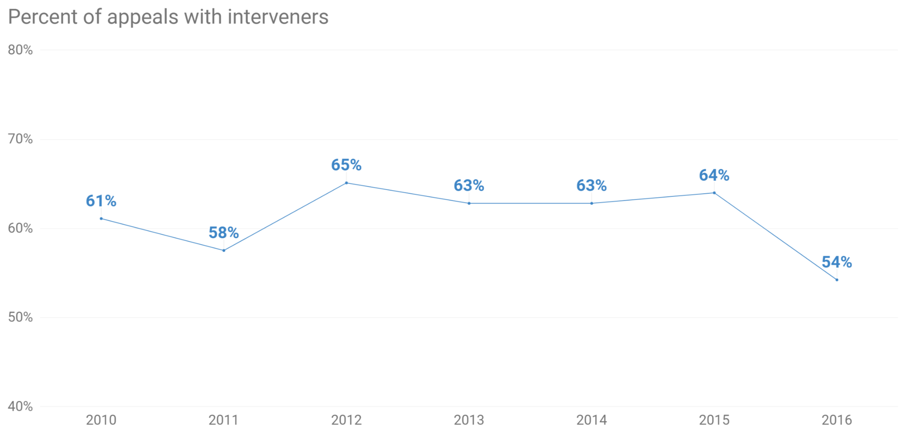
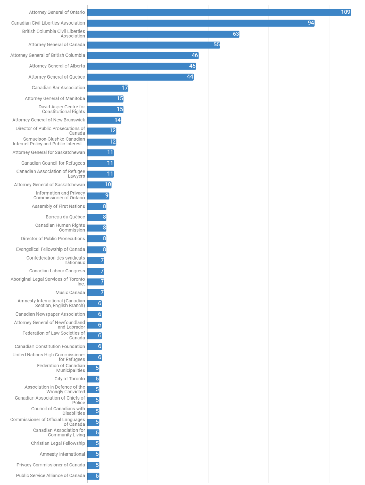
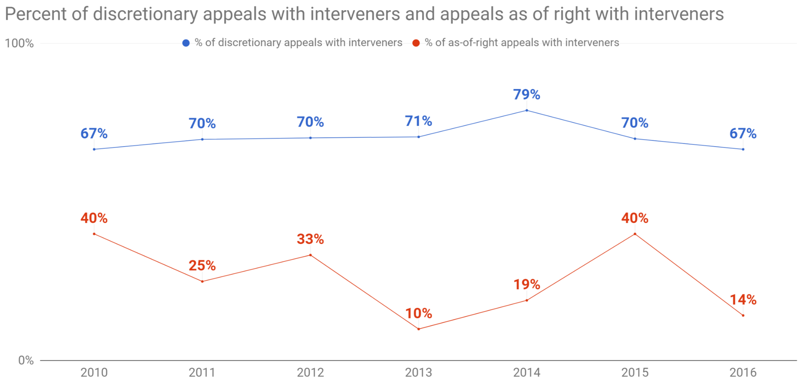

Sancho McCann
This is a repost of an article I originally wrote here, with some minor editorial changes.
Third parties submit amicus briefs (“friend-of-the-court” briefs) in almost every U.S. Supreme Court case. 781 were submitted in the term spanning 2014–2015—an average of 12 per case—and 147 in the marriage equality case alone.The Amicus Machine, Alli Orr Larsen and Neal Devins (2016) Record Breaking Term for Amicus Curiae in Supreme Court Reflects New Norm, Anthony J. Franze and R. Reeves Anderson (2015)
Canada’s closest analogue to the U.S.’s amici are called “interveners”.Interveners are Canada’s analogue of the U.S.’s amicus curiae. Canada also has a role called an amicus curiae, but this is a person appointed by the court, not simply an interested third party. From 2000–2008, interveners participated in only about 50% of cases at the Supreme Court of Canada, averaging 2.4 interveners per case.Interventions at the Supreme Court of Canada: Accuracy, Affiliation, and Acceptance, Benjamin Alarie and Andrew James Green (2010) This was despite the court granting 94% of the requests to intervene.
How has this changed since then? In the period from 2010–2016, interveners participated in appeals more frequently than they did from 2000–2008, but still at nowhere near the rate of amici at the U.S. Supreme Court.

To give a sense of who these interveners are, here are the parties that intervened at least five times over this seven-year period.The full list is here. I didn’t clean up the data, so the “Attorney General of Saskatchewan” is treated as different from the “Attorney General for Saskatchewan”. I also didn’t separate the interveners when a group of them filed together.

Attorneys general dominate the top of the list, as they always have. Together, they accounted for 25% of all interventions from 2010–2016. This is a noticeable decrease compared to the numbers from 10 and 20 years ago. In the period from 2000–2008, attorneys general accounted for 37% of all interventions. In the period from 1997–1999, they accounted for 42%.Intervenors before the Supreme Court of Canada, 1997–1999: A content analysis, Amanda Jane Burgess (2000) Non-government interveners like public interest groups, trade associations, and individuals are participating more now than ever before.
In the midst of this general increase in interventions, one category of cases continues to lag behind. Most of the caseload at the Supreme Court of Canada consists of discretionary appeals: the appellant requests that their appeal be heard, and the court decides whether they will hear the case. But, about 20–25% of the caseload at the Supreme Court of Canada consists of appeals that are heard “as of right”—automatically. As-of-right appeals generally involve indictable criminal offenses where one of the judges at the lower court disagreed with their court’s decision.Criminal Code, RSC 1985, ss. 691-693. In 2016, only two of the fourteen appeals in that category attracted any interveners.

I can think of two reasons why these cases are getting less help from interveners.
For a case to make it onto the court’s discretionary docket, it must pass through a filter. The court selects cases that involve “a question of public importance or […] an important issue of law”. As-of-right appeals sidestep this filter. This could lead to these cases just not being as interesting to outside parties.
Another explanation could be that the appellants in these cases (often, criminal defendants) don’t have the same ability to wrangle outside help for their position.
The Supreme Court of Canada is getting more input from third party interveners than ever before. This is potentially a good thing, but that depends on which theory regarding the role of interveners is true.There are various theories regarding the nature of amici in the U.S.: interest-group lobbyists, genuine friends of the court or of the parties, or a group of Supreme Court experts who have learned what information the justices crave and who are part of a managed strategy by the parties to win their cases. Interveners in Canada have been described as: genuine friends of the court who are trying to help the court make more accurate decisions, interest-groups presenting the best partisan arguments with which the justices can align, or interested third parties that the court listens to in order to increase the legitimacy of its decisions.
The “Amicus Machine” in the U.S. was built over a period of about 15-20 years, largely undirected, and not necessarily best designed to fill its ostensible role.This idea was discussed in a special episode of the First Mondays podcast, Amici #7: One Big Superbrief.
As interventions become more frequent at the Supreme Court of Canada, we (or rather, the justices) have the opportunity to direct how this practice grows. In particular, we should be on the outlook for potential disparities in access to justice that come from the parties’ differing access to interveners.